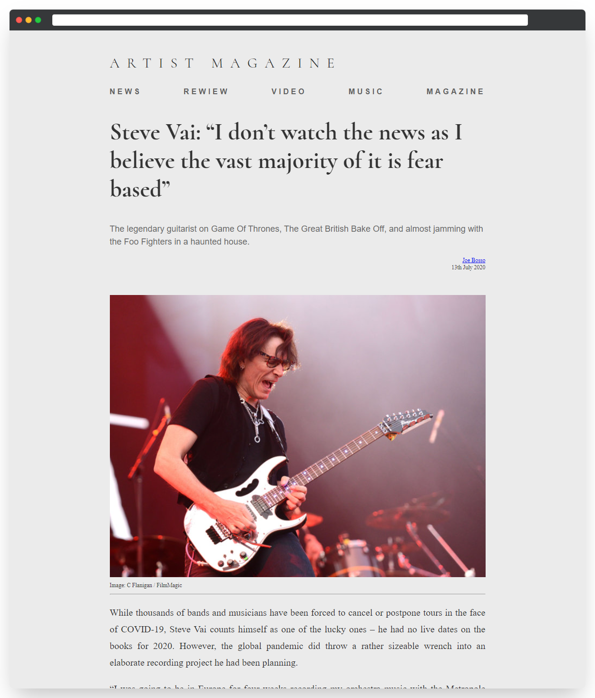

В этом задании вам необходимо настроить текстовые стили для небольшoй части страницы портала «Artist Magazine».

Используйте обобщенное свойство font на больших контейнерах. В остальных случаях используйте отдельные свойства.
Для логотипа и заголовка статьи используется шрифт Cormorant. Он находится в директории assets/fonts. Внутри вы найдёте два файла в формате .ttf.
16px1.5без засечекЛоготип портала «Artist Magazine» находится в блоке с классом .logo. Установите следующие стили:
#33330pxnormalCormorant. В качестве семейства установите шрифт с засечками#616161Основная секция страницы имеет класс .interview. Для этого блока установите следующие стили:
#33318px1.5с засечкамиЗаголовок интервью имеет класс .interview-header. Для заголовка установите следующие стили:
50px1.2Cormorant. В качестве семейства установите шрифт с засечкамиВступление, или краткое описание интервью расположено в блоке с классом .interview-description. Установите следующие стили для блока:
#686868без засечекИнформация об авторе и дате выпуска интервью находится в блоке .interview-footer. Установите следующие стили для блока:
12px1.25Само интервью располагается в блоке .interview-text. Этот блок имеет следующие стили:
20px1.75app.css. Ваша задача — дописать нужные стили../fonts/Cormorant-Regular.ttf./fonts/Cormorant-Bold.ttf